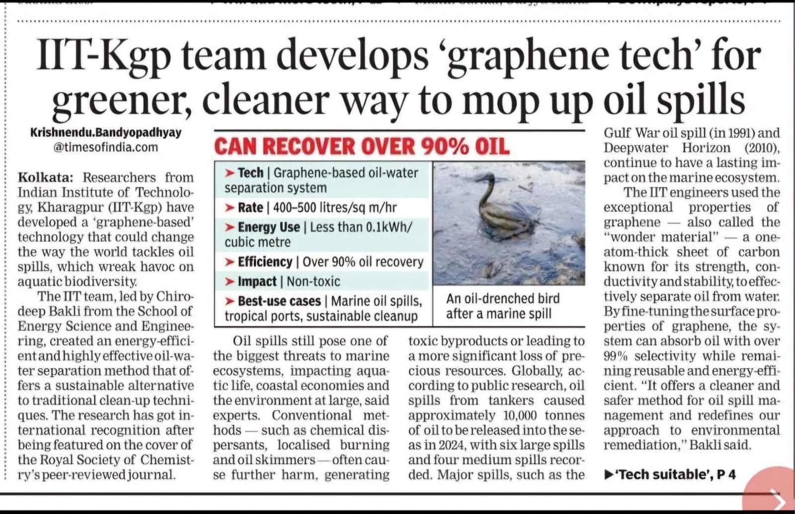
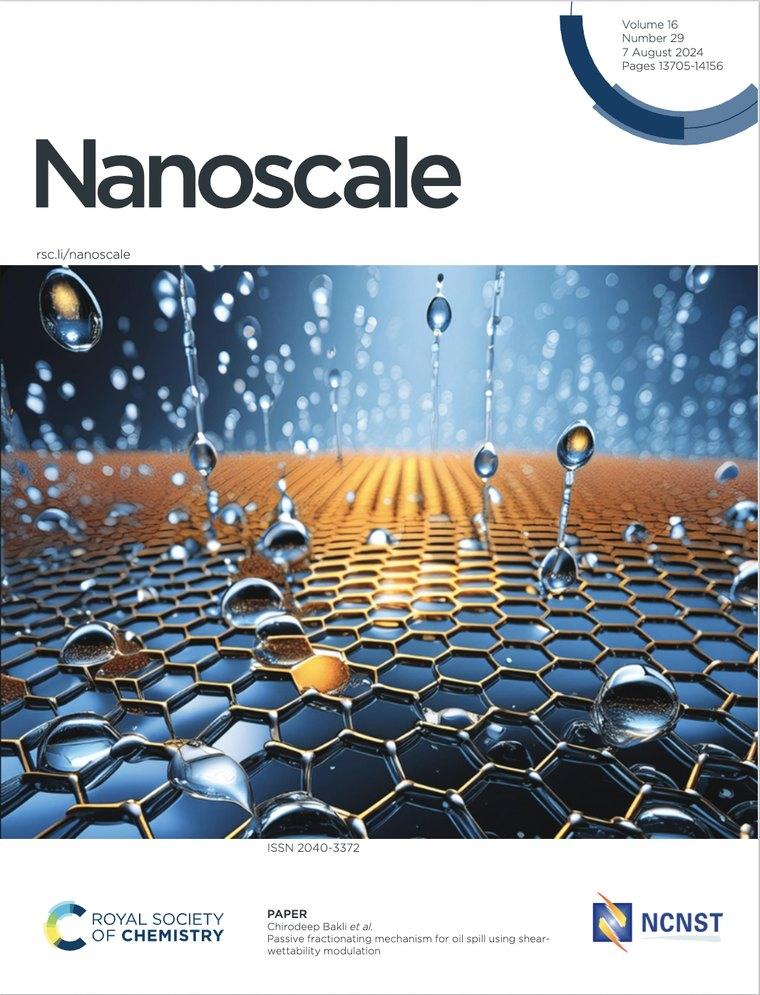
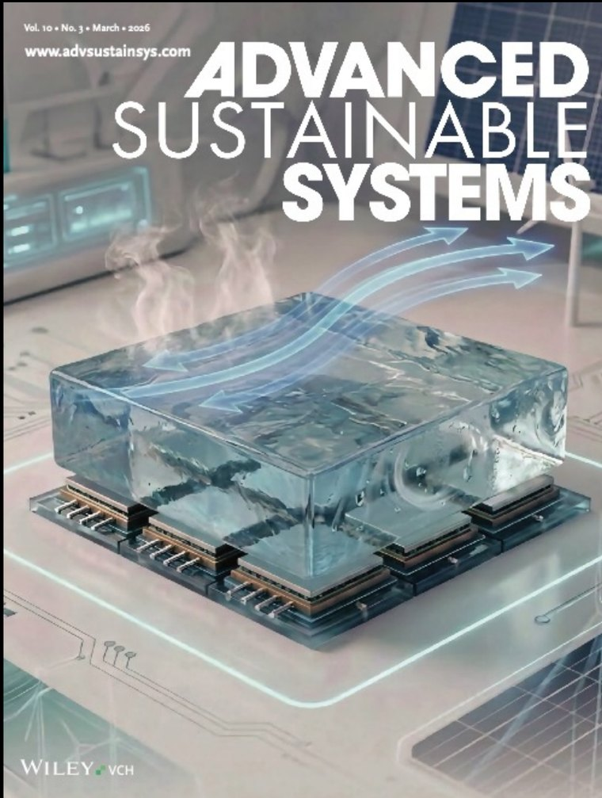
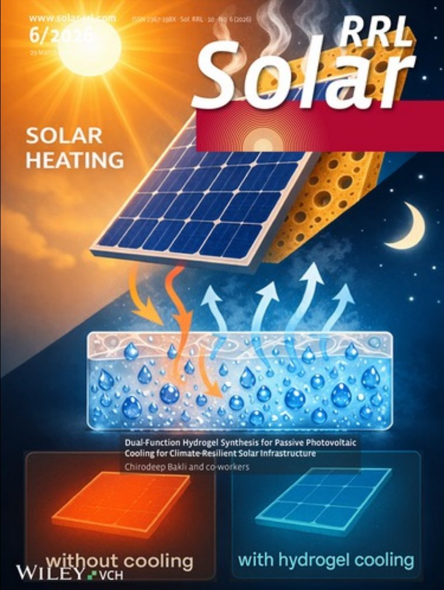
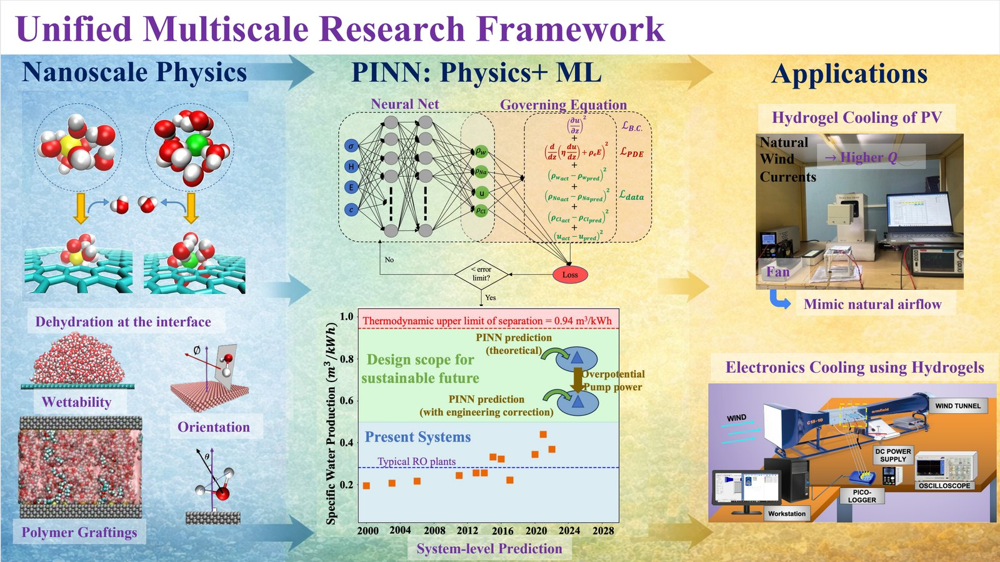
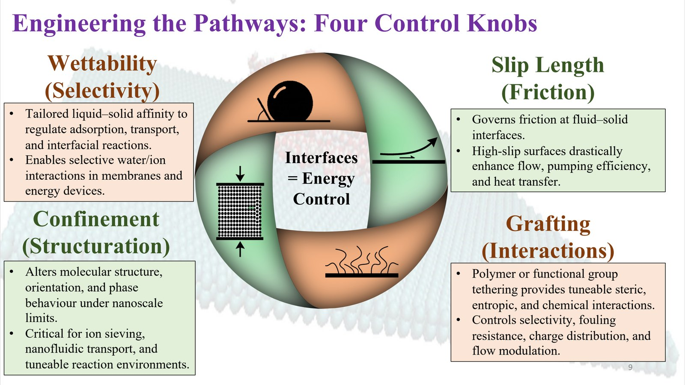

In the media

“IIT-Kgp team develops ‘graphene tech’ for greener, cleaner way to mop up oil spills”
Front-page coverage of our graphene-based oil–water separation work, led by Prof. Chirodeep Bakli at the School of Energy Science and Engineering, IIT Kharagpur. Research behind it: Passive fractionating mechanism for oil spill using shear-wettability modulation, Nanoscale 2024.
Journal covers

NanoscaleVol. 16, Issue 29 · August 2024 Passive oil–water fractionation in graphene nanochannels
Advanced Sustainable SystemsVol. 10, No. 3 · March 2026 Wind-enhanced hydrogel–thermoelectric cooling and energy recovery
Solar RRLIssue 6 · 2026 Dual-function hydrogel for passive solar-panel coolingHighlighted on LinkedIn
Posts by my institute, department and collaborators about our work.
Conference presentations
| Year | Contribution | Type |
|---|---|---|
| 2025 | Mathematical modeling and drying kinetics in thermal energy storage-assisted greenhouse solar dryer2025 IEEE 4th International Conference on Smart Technologies for Power … · V Saxena, KS Dubey, V Arya, A Goyal, C Bakli | Paper |
| 2022 | Optimization of building façade for passive thermal management: a machine learning based simulation study for Kolkata, IndiaACM BuildSys 2022 · S Chakraborty, V Arya, SS Siva Shankar, C Bakli · DOI | Paper |
| 2021 | Coupled effect of variable wettability and body force on fluid flow through nanochannels: a multiscale approach26th National & 4th International ISHMT-ASTFE Heat and Mass Transfer Conference (IHMTC), IIT Madras · A Chaudhuri, V Arya, C Bakli · DOI | Paper |
| 2021 | Decoding the alteration of thermal conductivity of nanofluids from molecular perspectiveIHMTC 2021, IIT Madras · A Kumar, V Arya, C Bakli · DOI | Poster |
| 2021 | Optimising effectiveness of double pipe heat exchanger using nanofluid and different porous fins arrangementASME Power Conference 2021 · A Kumar, V Arya, C Bakli · DOI | Paper |
| 2021 | Effect of steric inclusions in ion concentration polarization (ICP) based preconcentration2nd International Conference on Fluids Under Confinement | Poster |
PhD seminars

PhD viva-voce (thesis defence)
Defended the thesis Transport control under confinement: molecular mechanisms, soft matter effects, and multiscale integration. Supervisor: Prof. Chirodeep Bakli.

PhD synopsis seminar
Presented the synopsis of the thesis at the School of Energy Science and Engineering. Supervisor: Prof. Chirodeep Bakli.
Teaching outreach
Hijli College, Kharagpur
As part of the Prime Minister's Research Fellowship, I taught undergraduates in the Department of Geography, which also helped me see the ground reality my research aims to serve.
- Applications of GIS; Research Methodology Workshop · B.Sc. Honours, May 2023 – Apr 2024
- Research Methods; Research Methodology Lab · B.Sc. Honours, May 2022 – Apr 2023
Renewable-energy labs & modelling
Lab and tutorial support for postgraduate courses in the School of Energy Science and Engineering.
- Renewable Energy Design Lab (ES69202)
- Renewable Energy Systems Lab (ES69201)
- Energy Systems Modelling (ES61008)
Hands-on tutorials
Tutorials and teaching resources on molecular simulation, physics-informed machine learning and thermal engineering will be shared here.
Invite me to speakI'm happy to talk about nanofluidics, physics-informed machine learning and passive cooling at seminars, schools and outreach events.
Get in touch